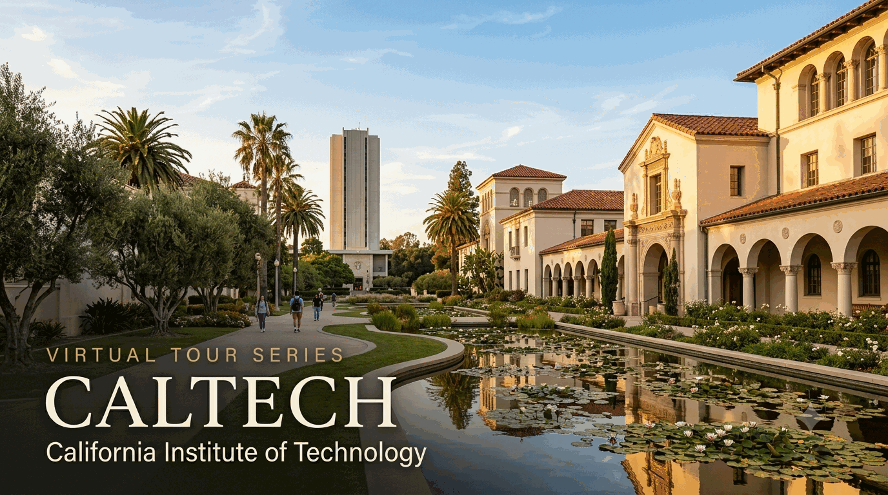

University Spotlight: Caltech — Virtual Tour Guide

I'm delighted to share the tenth edition of the University Virtual Tour Series — and with it, my coverage of every university in the QS World Rankings 2027 global top 10 is complete. Caltech (the California Institute of Technology) is unlike every other university in this series: with under 1,000 undergraduates, it is the smallest institution I have covered by a wide margin, and it is a STEM-only institution — there is no business school, no law school, no humanities-only degree. Every single undergraduate, regardless of eventual major, completes the same demanding core curriculum in mathematics, physics and chemistry. This edition is written for one specific kind of student: the one who is unmistakably, unapologetically in love with science and mathematics for its own sake.
Caltech also offers a 60–90 minute self-guided walking tour and a 360-degree virtual tour through admissions.caltech.edu.
I strongly recommend that parents of Grade 9 and above students make the time to visit at least one university — Caltech, a local university in India, or any institution of your choice. A physical visit gives your child something no virtual tour can replicate: they will see the infrastructure and facilities with their own eyes, observe how professors engage with students in live classrooms, and most importantly, spend time talking to existing students about their day-to-day experience. These conversations almost always leave a lasting impression and help students make more grounded, confident decisions about their future. A local university visit is a completely valid and valuable starting point. If you'd like guidance planning a visit, feel free to get in touch.
Caltech itself says it plainly on its own admissions website: "Caltech is not for everyone." Every single undergraduate — regardless of intended major — completes the same rigorous core curriculum in mathematics, physics and chemistry before specialising. There are no non-STEM undergraduate majors at all. This is the right environment for a student who finds genuine joy in problem sets, who would rather go deep into one hard question than broad across many subjects, and who is excited rather than intimidated by being surrounded by peers who are equally serious about science. It is quite likely the wrong environment for a student who is strong across many subjects but not specifically STEM-obsessed, or who thrives on breadth and social variety over research depth. I share this openly because fit matters more at Caltech than at any other university in this series — a wrong-fit admit here helps no one.
Caltech Admission Requirements — CBSE / State Boards and Cambridge A Level
The table below summarises what Caltech looks for from students applying through each pathway. Caltech's acceptance rate is approximately 2.6–3% — the most selective in this entire series. Reach out for personalised application strategy guidance.
| Requirement | CBSE / Indian State Boards | Cambridge A Level |
|---|---|---|
| Boards Accepted | CBSE, ICSE and all Indian State Boards accepted — Caltech reviews every applicant in the context of their own school and country. There is no published list of "acceptable" boards and no fixed percentage cut-off. | Cambridge International AS & A Level fully accepted and well understood by Caltech's admissions committee, which reviews thousands of international applications each year. |
| Academic Bar | No official minimum, but competitive applicants are consistently in the top 1% of their school — 99% of admitted students nationally rank in the top 10% of their graduating class. Depth in Maths and Physics matters far more than breadth across many subjects. | A*A*A to A*AA typical, with A* in Mathematics and Further Maths/Physics essentially expected for competitive applicants. |
| Required Coursework | Highest-level Mathematics available (calculus essential) + at least one year each of Physics and Chemistry + advanced English. If your school cannot offer calculus, physics or chemistry, Caltech accepts external examination scores or certification as substitutes — document the gap with your counsellor. | A Level Mathematics (Further Maths strongly recommended for Engineering/Physics/CS) + Physics + Chemistry where relevant to the intended area of study. |
| Standardised Tests | SAT or ACT required (reinstated from Fall 2025 entry). No official minimum, but admitted students typically score 1530+ SAT (near-perfect 790–800 Math) or 35+ ACT. SAT Subject Tests are not required (discontinued since 2020). JEE, NEET or any Indian entrance-exam rank is not required or considered. | Same requirement — SAT or ACT regardless of qualification. A Level results do not substitute for the SAT/ACT requirement. |
| English Proficiency | Required for all international applicants unless English is the medium of instruction at your secondary school — in that case it is strongly recommended but not mandatory. If required: IELTS 7.0+, TOEFL iBT 100+, or Duolingo English Test 130+. | Cambridge A Level taught in English medium generally satisfies the exemption; strongly recommended to submit a score regardless for a stronger file. |
| Essays | Common Application personal essay + Caltech-specific supplemental essays (100–250 words each) exploring STEM interests in real depth. Caltech's own guidance: "there is no way to write about too much STEM" — lean fully into technical curiosity rather than broad achievements. | Same essays and same advice apply to all applicants regardless of board. |
| Teacher Recommendations | 2 required: one from a STEM teacher (Maths, Physics, Chemistry or Biology) and one from a Humanities/Social Science teacher (English, History, Government or Economics). | Same requirement for all applicants. |
| Application Portal | Common Application or QuestBridge (for students from low-income backgrounds, due end of September) — Caltech has no preference between the two. Application fee: USD 75; waived automatically for financial hardship. Caltech does not use UCAS. | Same — all applicants use Common App or QuestBridge. |
| Restrictive Early Action (REA) | Deadline: November 1 | Decision: mid-December | Non-binding — you may decline even if admitted, and compare offers until May 1. Restricts you from applying Early Action/Early Decision to other private universities (with some public-university exceptions). | Same REA restrictions apply to all applicants. |
| Regular Decision (RD) | Deadline: January 5 | Decision: mid-March | No restrictions on other applications. | Same deadline for all applicants. |
| Financial Aid (International) — Critical | Caltech is need-aware for international applicants (need-blind only for US citizens/permanent residents). The most important rule in this table: international citizens who apply REA are not eligible for financial aid at all — aid is only available to international students who apply Regular Decision. If your family will need aid, you must apply RD, not REA. You must also declare your intent to apply for aid at your very first application; if you do not apply for or receive aid in your first year, you may never apply for aid at Caltech again. | Same rule applies to all international applicants regardless of qualification — the REA-blocks-aid rule is not board-specific. |
| If Admitted With Aid | Caltech commits to meeting 100% of demonstrated financial need, primarily through grants. Average grant aid (Fall 2024): approximately USD 73,000/year. Approximately 60% of all students receive institutional aid. Families earning under USD 100,000/year are typically close to fully covered. Caltech offers no merit scholarships — all aid is need-based only. | Same policy for all admitted international students. |
| Visa | F-1 Student Visa — Caltech issues the I-20 after admission and deposit. As with all US F-1 visas from June 2025 onward, applicants must set all social media profiles to public before the visa interview; plan 5–6 months for processing. India is not on the current US travel ban list. | Same process for all international students. |
All undergraduate applications go through the Common Application or QuestBridge — Caltech does not use UCAS or the Coalition App. The application fee is USD 75, automatically waived for financial hardship. Caltech evaluates every applicant in the context of their own school and country — there is no fixed grade cut-off for any board. The single most important academic signal is depth in mathematics: Caltech expects the highest-level calculus course available at your school, alongside at least a year each of physics and chemistry. Notably, Caltech does not require or consider JEE, NEET or any other Indian entrance-exam rank — your school record, SAT/ACT score, essays and demonstrated research curiosity carry the full weight of the decision.
Voices from Caltech — Indian Students and Alumni
"Caltech is exceptionally diverse, with a variety of international organisations, faculty and events… I have found the Caltech community to be so close-knit."
— Indian undergraduate student, Caltech | "International perspective: an Indian student in the United States," Times Higher Education Student, 2023
Describing his Caltech years as a "life-changing experience," rooted in the deep trust the Institute placed in its students — a principle he carried into his own career training generations of Indian engineers.
— Dr. Sudhir Kumar Jain, India, Caltech PhD in Earthquake Engineering (1983) | Padma Shri awardee; Founding Director, IIT Gandhinagar; former Vice Chancellor, Banaras Hindu University | Caltech Distinguished Alumni Award 2022
Why Should Your Child Consider Caltech?
1. QS #7 Globally — The Highest Nobel-Laureate Density of Any University on Earth
Caltech holds #7 globally in QS 2027 with a score of 96.6, and has held a top-10 QS position continuously since 2012. But the number that truly captures Caltech is this: with only ~1,000 undergraduates and roughly 2,400 students in total, its alumni and faculty have won 39+ Nobel Prizes, 1 Fields Medal, 6 Turing Awards, and 71 US National Medals of Science or Technology. As one US student review puts it, at Caltech "someone you meet in your time here will more likely than not be a Nobel laureate." The 3:1 student-faculty ratio — the most intimate of any university in this series — means undergraduates work directly alongside the same faculty conducting this Nobel-calibre research, not with teaching assistants several steps removed. Caltech also manages NASA's Jet Propulsion Laboratory (JPL), the centre for America's robotic exploration of the solar system — undergraduates have direct pathways into active interplanetary missions from their very first year.
2. A STEM-Only Core Curriculum — Depth Over Breadth, By Design
Every Caltech undergraduate, whatever they eventually major in, completes the same foundational sequence in mathematics, physics and chemistry — there is no path to a Caltech degree that avoids rigorous science and maths. Students do not declare a major until the end of their first year, giving them a full year to explore the six academic divisions (Biology and Biological Engineering; Chemistry and Chemical Engineering; Engineering and Applied Science; Geology and Planetary Sciences; Humanities and Social Sciences; and Physics, Mathematics and Astronomy) before committing. Around 80% of Caltech undergraduates conduct real research, often starting in their first year through the Summer Undergraduate Research Fellowship (SURF) programme, writing genuine research proposals and presenting findings alongside faculty mentors. Housing is guaranteed for all first-years through eight distinctive undergraduate Houses (not typical dormitories), each with its own traditions and governance — a structure that fosters the tight-knit, collaborative culture Caltech is known for, reinforced by an Honor Code that governs academic life campus-wide.
3. Financial Aid — Generous If Admitted, But One Rule Can Disqualify You Entirely
Caltech is need-aware for international students (need-blind only for US citizens and permanent residents) — the same policy structure as Stanford. If admitted with demonstrated need, Caltech commits to meeting 100% of that need, primarily through grants; the average grant award in Fall 2024 was approximately USD 73,000/year, and roughly 60% of all students receive institutional aid. Families earning under USD 100,000/year are typically close to fully covered. However, there is one rule unique to Caltech in this entire series, and it is critical: international citizens who apply Restrictive Early Action are not eligible for financial aid at all. If your family will need aid, your child must apply Regular Decision, not REA — applying early forfeits aid eligibility entirely, with no exceptions. A second rule compounds this: an international student must declare their intent to apply for aid at the time of their very first application; a student who does not apply for or receive aid in their first year may never apply for Caltech aid again, in any later year. Caltech offers no merit scholarships of any kind. Total cost of attendance for 2025–2026 is approximately USD 93,912/year (~INR 88 lakhs at ~USD 94/INR) for students living on campus.
4. Caltech and India — A Quiet But Deep Connection
India's presence at Caltech runs through some of its most consequential alumni. Dr. Sudhir Kumar Jain earned his PhD in Earthquake Engineering at Caltech in 1983 and went on to become India's preeminent earthquake engineer — founding director of IIT Gandhinagar, later Vice Chancellor of Banaras Hindu University, and a recipient of the Padma Shri, one of India's highest civilian honours, for developing the seismic building codes that protect millions of Indian structures today. On campus, the Organization of the Associated Students of the Indian Subcontinent (OASIS) is the cultural home for Indian and South Asian students — hosting Diwali celebrations, Holi colour festivals, and Republic Day and Independence Day flag-hoisting ceremonies, while Caltech Dhamaka, the campus's co-ed Bollywood fusion dance team, performs at the annual OASIS culture show. Current students speak of a campus so tightly knit that the distinction between "international" and "domestic" student barely registers day to day — a genuine comfort for Indian families considering a campus of this size and intensity for the first time.
What Parents Should Know
- Critical: international applicants who apply Restrictive Early Action (November 1) are not eligible for any financial aid. If your family will need aid, apply Regular Decision (January 5) instead — this single rule can silently disqualify a family from aid they were counting on
- A second rule: you must declare intent to apply for aid at your very first Caltech application. If you skip applying for aid in year one, you cannot apply for Caltech aid in any later year — no exceptions
- Total cost of attendance (2025–2026): approximately USD 93,912/year on campus (~INR 88 lakhs at ~USD 94/INR, June 2026); no merit scholarships exist — all aid is need-based only
- If admitted with demonstrated need: 100% met, primarily via grants; average grant Fall 2024 was ~USD 73,000/year; ~60% of all students receive institutional aid; families under USD 100,000 income are typically close to fully covered
- SAT or ACT is mandatory (reinstated for Fall 2025 entry); no official minimum but admitted students typically score 1530+ SAT (near-perfect Math) or 35+ ACT; SAT Subject Tests are not required
- JEE, NEET or any Indian entrance-exam rank is explicitly not required or considered — Caltech evaluates school record, SAT/ACT, essays and research curiosity only
- Acceptance rate is approximately 2.6–3% — harder to gain admission to than MIT (~4.5%); this is the most selective university in this entire series
- Fit matters enormously: Caltech has no non-STEM majors and every student completes the same core maths/physics/chemistry sequence regardless of major — this is the right choice only for a genuinely STEM-obsessed student, not a broadly strong all-rounder
- F-1 social media vetting (from June 2025): all F-1 applicants must set social media profiles to public before their visa interview; plan 5–6 months for processing; India is not on the current US travel ban list
- No financial aid is available for international transfer students or 3/2 engineering programme applicants — aid is only available to first-year international applicants
To discuss a dedicated Caltech plan for your family — covering the REA-vs-RD financial aid decision, SAT/Math preparation strategy, STEM-focused essay writing, and an honest fit conversation about whether Caltech's intensity matches your child's learning style — feel free to write to me at pcmadankumar@gmail.com or get in touch via the contact page. I'm happy to set up a one-on-one session at a time convenient for you.
I curate University Virtual Tour resources as part of my commitment to helping students and parents make informed post-secondary decisions. With this edition, I have now covered every university in the QS World Rankings 2027 global top 10. Future editions will continue to spotlight leading universities across major study destinations worldwide, including the UK, USA, Australia, Canada, India and Singapore.
Best wishes,
Madan Kumar PC
References
- Caltech QS 2027 Ranking — #7 globally, score 96.6; continuous top-10 QS position since 2012. topuniversities.com
- Caltech Rankings (Official) — #7 QS; also #7 THE World University Rankings. caltech.edu
- Caltech Facts (US News) — ~2,200 students, 3:1 student-faculty ratio, six academic divisions, JPL operations. usnews.com
- International Applicants (Official Caltech Admissions) — SAT/ACT required; need-aware for international students; 100% demonstrated need met if admitted. admissions.caltech.edu
- International Financial Aid Statement of Intent (Official) — need-aware for international citizens; REA applicants ineligible for aid; must declare aid intent at first application. admissions.caltech.edu
- Caltech Complete Guide for International Students — COA ~USD 93,912 (2025–2026); average grant ~USD 73,000 Fall 2024; ~60% receive institutional aid. williamlebeau.com
- Admission to the First-Year Class (Official Caltech Catalog) — Common App or QuestBridge; REA November 1; RD January 5; two teacher recommendations required. catalog.caltech.edu
- How to Get Into Caltech — Shemmassian Academic Consulting — COA 2025–2026 figures; average aid Fall 2024 just under USD 73,000. shemmassianconsulting.com
- Caltech Names Its Three Newest Distinguished Alumni (Official) — Dr. Sudhir Kumar Jain, Padma Shri awardee, PhD '83. caltech.edu
- OASIS — Organization of the Associated Students of the Indian Subcontinent (Official). oasis.caltech.edu
- International Perspective: An Indian Student in the United States — first-person account of an Indian Caltech undergraduate. timeshighereducation.com
- Caltech Student Campus Tour — Official YouTube Playlist. youtube.com